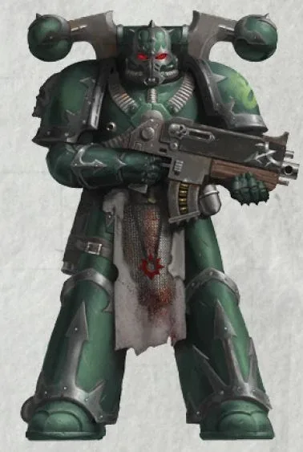
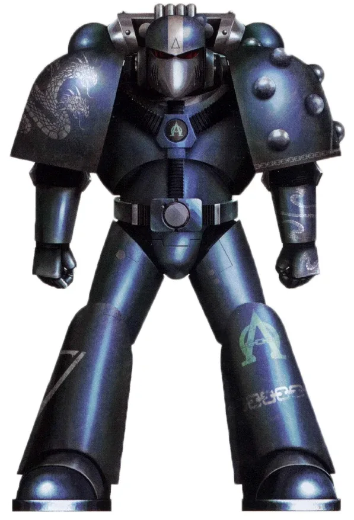
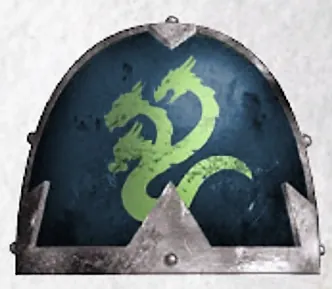
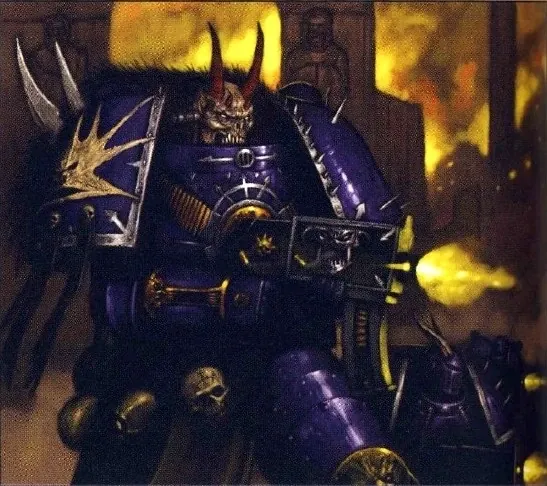
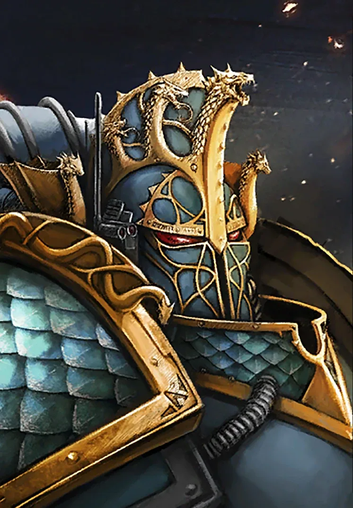
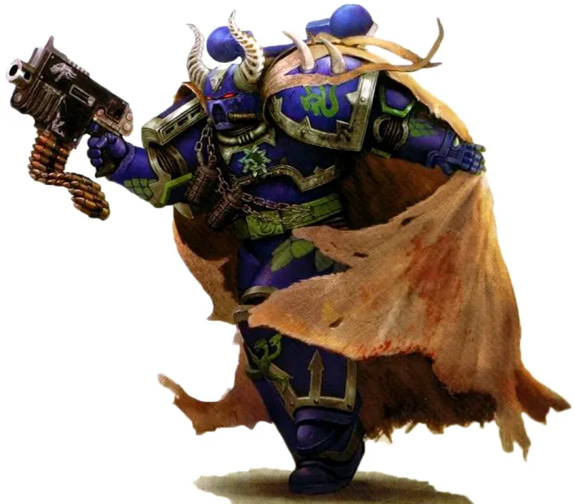
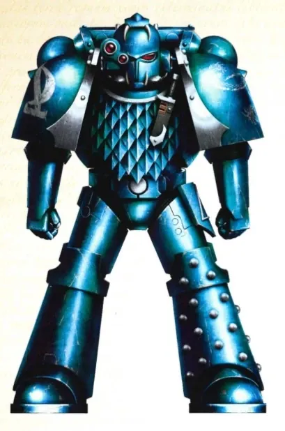
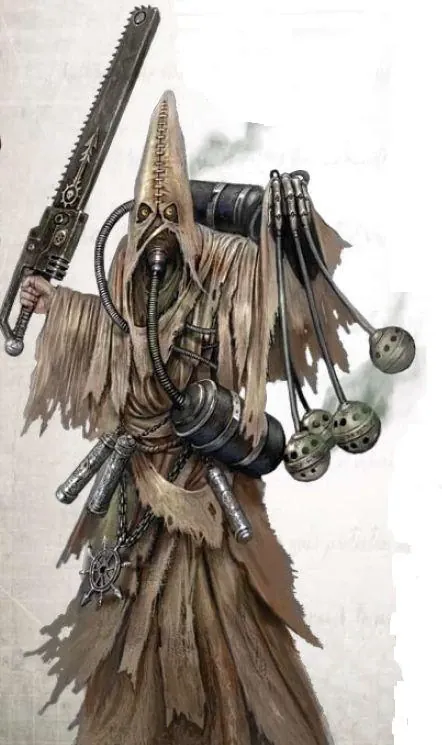

01ภาพรวม

Legion แห่งความลับ — ไม่มีใครรู้ว่าพวกเขาอยู่ที่ไหน รับใช้ใคร หรือต้องการอะไรจริง ๆ
02ต้นกำเนิด
Legion ที่ 20 ภายใต้ Primarch ฝาแฝด Alpharius และ Omegon เข้าข้าง Horus ด้วยเหตุผลที่ซับซ้อนที่สุด และหลังสงครามไม่ได้หนีเข้า Eye of Terror แต่กระจายตัวซ่อนอยู่ในจักรวรรดิ
03เนื้อเรื่องเจาะลึก
Legion ที่ 20 — คนสุดท้าย
Alpharius เป็น Primarch คนสุดท้ายที่ถูกพบ ไม่มีใครรู้ว่าเขาเติบโตที่ไหน Legion ของเขาเก่งเรื่องกลยุทธ์ลับ และเคยพยายามพิสูจน์ว่าเหนือกว่า Ultramarines
ทรยศหรือเล่นเกมยาว?
Alpha Legion เป็นผู้ทรยศที่คาดเดายากที่สุด บางครั้งดูเหมือนช่วยจักรวรรดิ บางครั้งทำลาย เนื้อเรื่องเผยว่าพวกเขาได้รับข้อมูลจากกลุ่มเอเลียนลับ (Cabal) ว่าการชนะของ Horus จะดีกว่าสำหรับมนุษยชาติ — ข้ออ้างที่ไม่มีใครพิสูจน์ได้
04ยุค 30K — ในยุค Great Crusade และ Horus Heresy

ยุค 30K เป็น Legion ที่อายุน้อยที่สุด ชอบพิสูจน์ตัวเองด้วยการท้าทาย Legion ที่เก่งที่สุด ใช้สายลับและการแทรกซึม
ดูภาพรวมยุค 30K ทั้งหมดที่ เนื้อเรื่องยุค 30K และความต่างของสองยุคที่ เปรียบเทียบ 30K vs 40K
05นิสัยและวัฒนธรรม
- ทหารทุกคนอาจแนะนำตัวว่า 'ข้าคือ Alpharius'
- สร้างเครือข่ายลัทธิและสายลับในจักรวรรดิ
- แทบไม่กลายพันธุ์เพราะไม่ได้อยู่ใน Warp — บางคนสงสัยว่าพวกเขายังแอบภักดี
06จุดที่น่าสนใจ
- ถูกจักรวรรดิประกาศว่า 'ถูกกวาดล้าง' สามครั้ง
- สัญลักษณ์ไฮดรา: ตัดหัวหนึ่ง อีกหัวงอกขึ้นมา
07ความสามารถพิเศษ
สิ่งที่ทำให้ Alpha Legion แตกต่างจากทัพอื่น — ทั้งพลังที่ติดตัวมาทั้งเผ่า/ทัพ และความสามารถของบุคคลสำคัญ
ของทั้งเผ่า/ทัพ

เครือข่ายสายลับ Hydra
Alpha Legion ทำงานเหมือนงูหลายหัว — ตัดหัวหนึ่ง อีกหลายหัวยังทำงานต่อ มีสายลับแฝงในรัฐบาล กองทัพ และลัทธิทั่วจักรวรรดิ เป้าหมายจริงของพวกเขาแทบไม่มีใครรู้

"ข้าคือ Alpharius"
ทหารทุกคนถูกฝึกให้อ้างตัวเป็น Alpharius ได้ ทำให้ศัตรูไม่รู้ว่าใครคือผู้นำ ส่วน Primarch Alpharius และ Omegon เป็นฝาแฝดที่สลับตัวกันได้

แทรกซึมก่อนบุก
ก่อนการบุก ลัทธิที่ Alpha Legion ปลูกฝังไว้จะลุกฮือพร้อมกันทั้งดาว ทำลายระบบป้องกันจากข้างใน
ของบุคคลสำคัญ

Alpharius Omegon
Primarch ฝาแฝดPrimarch ที่มาเป็นสองคน ถูกพบคนสุดท้ายในยุค Great Crusade เข้าข้าง Horus โดยอ้างว่าทำเพื่อต่อต้านภัยที่ใหญ่กว่า (Cabal ของเอเลียน) ชะตากรรมของทั้งสองยังเป็นปริศนา
08หน่วยและบทบาทในกองทัพ
Alpha Legion เป็นหน่วยสายลับที่ไม่มีใครรู้โครงสร้างจริง ทุกคนอ้างว่าเป็น "Alpharius" หรือ "Omegon" ได้ ใช้เครือข่ายสายลับและกองกำลังมนุษย์แทรกซึมทั่วจักรวรรดิ

Harrowmaster
แฮร์โรว์มาสเตอร์ผู้นำของ Headhunter Kill Team และหน่วยพิเศษ (ตำแหน่งจากยุค 30K) ส่วนผู้นำ Warband ในยุค 40K มักใช้ชื่อปลอม
Operative
โอเปอเรทีฟสายลับมนุษย์ที่ถูกฝังตัวในรัฐบาล กองทัพ และลัทธิต่าง ๆ บางคนไม่รู้ตัวด้วยซ้ำว่าทำงานให้ Alpha Legion

Headhunters
เฮดฮันเตอร์หน่วยลอบสังหารที่เจาะจงผู้นำศัตรู ใช้กระสุนพิเศษและข้อมูลลับ

Cultist Cells
เซลล์ลัทธิเครือข่ายลัทธิใต้ดินที่ก่อกบฏพร้อมกันเมื่อได้รับสัญญาณ
หน่วยทั่วไปของ Chaos Space Marines (Sorcerer, Warpsmith, Dark Apostle ฯลฯ) ดูได้ที่ หน่วยและบทบาทของ Chaos Space Marines
09วีรกรรมและเหตุการณ์สำคัญ
Pluto
Alpharius ถูก Rogal Dorn สังหาร
Eskrador
'Alpharius' ถูกกิลลิมันสังหาร — แต่อาจเป็นแผนลวง
10ตัวละครสำคัญ
Alpharius Omegon
Primarch ฝาแฝดสถานะไม่แน่ชัด
11ยุค 40K — สหัสวรรษที่ 41
ยุค 40K Alpha Legion ปฏิบัติการลับ ปลุกปั่นกบฏ และทำวินาศกรรมในจักรวรรดิ
12เนื้อเรื่องล่าสุด (Era Indomitus / M42)
ยังเคลื่อนไหวในเงามืดเช่นเดิม — ไม่มีใครรู้ว่าแผนใหญ่ของพวกเขาคืออะไร
หลังการเกิด Great Rift ปฏิทินของจักรวรรดิคลาดเคลื่อน เหตุการณ์ยุคปัจจุบันจึงมักระบุเพียง 'M42' ไม่มีปีที่แน่นอน